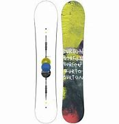
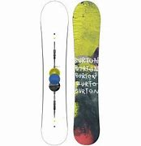

Lumilautailu!
Laudat
Lumilautoja on erilaisia. Riippuen laskijan laskutyylistä.
Lumilautoja on tehty:
- Puuterilumeen
- Freestyle laskemiseen
- Yleislaskuun
- Syöksylaskuun

Lumilautoja on erilaisia. Riippuen laskijan laskutyylistä.
Lumilautoja on tehty:
- Puuterilumeen
- Freestyle laskemiseen
- Yleislaskuun
- Syöksylaskuun
